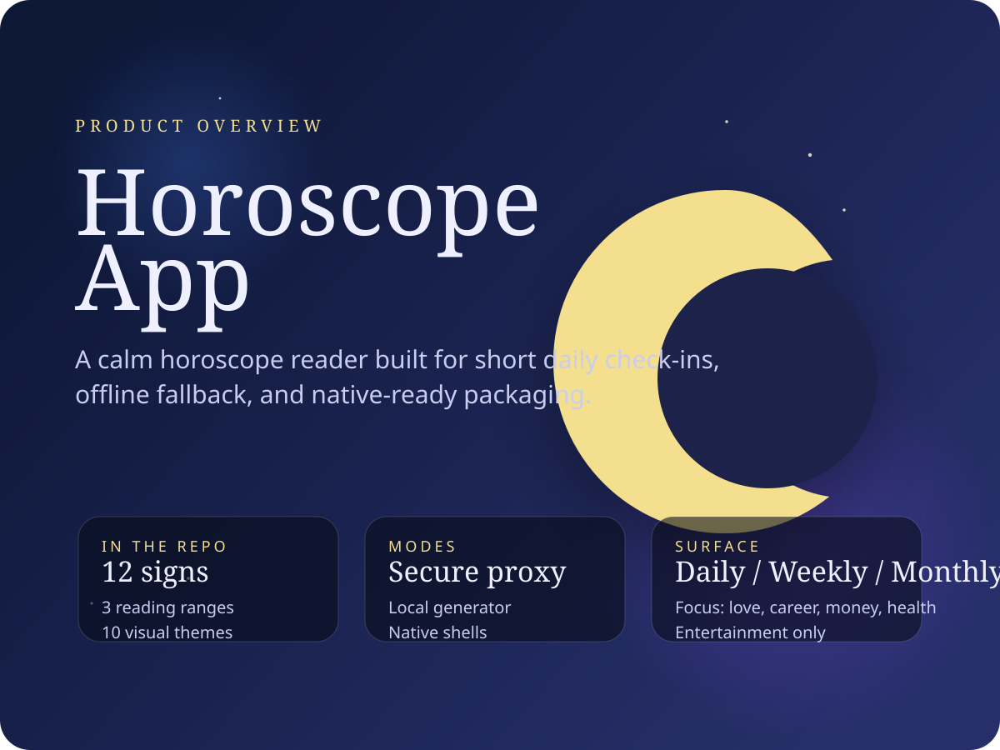
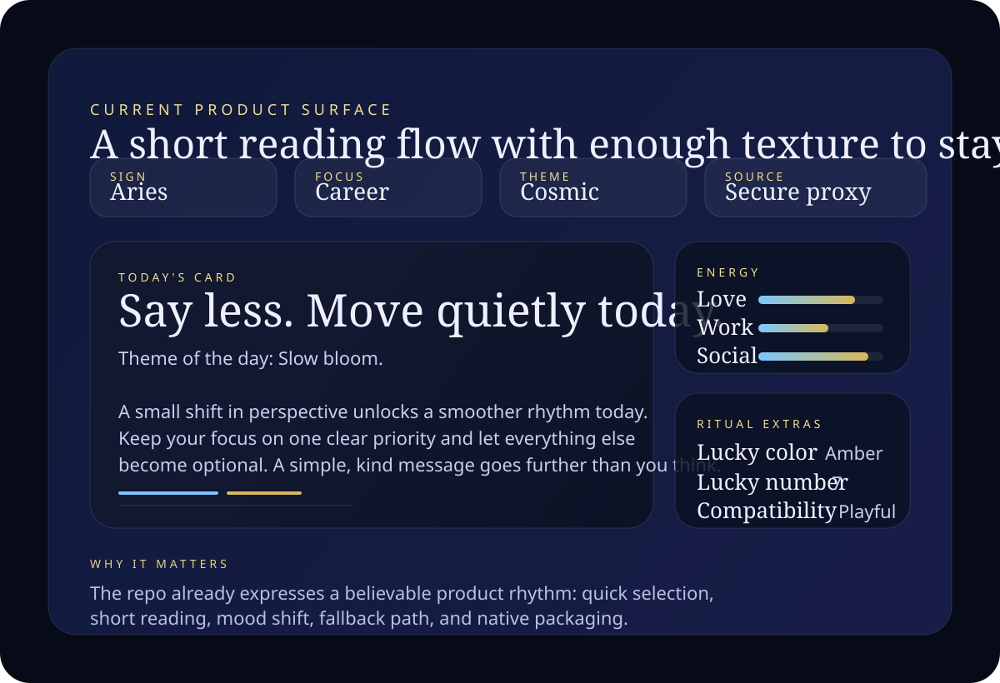

Three reading ranges
Daily, weekly, and monthly tabs are built into the interface, so the product can hold both quick ritual use and slightly longer sessions.
Minimal app page
This repo packages a calm horoscope surface: choose a sign, pick a focus, move between daily, weekly, and monthly views, and keep the reading available even when live APIs are not.

What it is
The repo describes a static horoscope app with a ritual-first UI. The current product surface is built around short readings, quick sign switching, mood-led themes, and installable packaging through Capacitor.
It is not framed as a finished app-store launch. The public-safe read is tighter: a packaged prototype with a credible reading loop, an offline fallback, and a clear path from web build to phone install.
Reading surface
Daily, weekly, and monthly tabs are built into the interface, so the product can hold both quick ritual use and slightly longer sessions.
The UI already separates general, love, career, money, and health. That keeps the reading surface lightweight while still feeling personal.
Ten named palettes are present in the app shell. The product identity is clearly about mood and atmosphere, not just text blocks on a blank screen.
The repo supports a secure server-side proxy, direct API entry, a public demo endpoint, placeholder copy, and a local generator for offline use.
Favorites, lucky color and number, compatibility, archive toggles, and energy bars are already represented in the current interface.
Capacitor shells for iOS and Android sit beside the web build, which means the same product world can move from browser preview to device install.
Use cases
Save one sign, keep the reading short, and use the one-line lead as the first thing you see before the longer text.
When no provider is available, the local generator and placeholder copy keep the app useful instead of collapsing into an empty shell.
The web surface can be synced into iOS and Android shells, which makes this repo suitable for personal builds and private testing on actual devices.
Visual field

Proof and availability
Every zodiac sign is represented in the current selector and local generator.
Daily, weekly, and monthly views are present in the app surface.
Named palettes in the repo support a stronger visual mood than a single skin.
Secure proxy, direct API key, public demo, placeholder copy, and local generation.
Web build, iOS shell, and Android shell are all present in the current tree.
No evidence in the repo suggests an app-store release or live production deployment yet.
The app is presented as entertainment. The repo also shows a secure proxy option for keeping provider keys off the client when live API use becomes necessary.
FAQ
No app-store listing or store metadata is evidenced in the repo. The current state is best described as a packaged prototype with native shells.
No. The repo includes placeholder copy and a local generator, so the reading flow can still function without a live provider.
It moves provider keys to the server side. That matters once the app stops being a personal test and starts needing private API credentials.
The existing product leans into the ritual: sign selection, focus selection, palette changes, a one-line lead, and visible energy bars rather than endless text.
Final CTA
This export keeps the claim set tight: an installable horoscope reader with a defined mood, observable feature set, and a credible path from browser build to phone test.